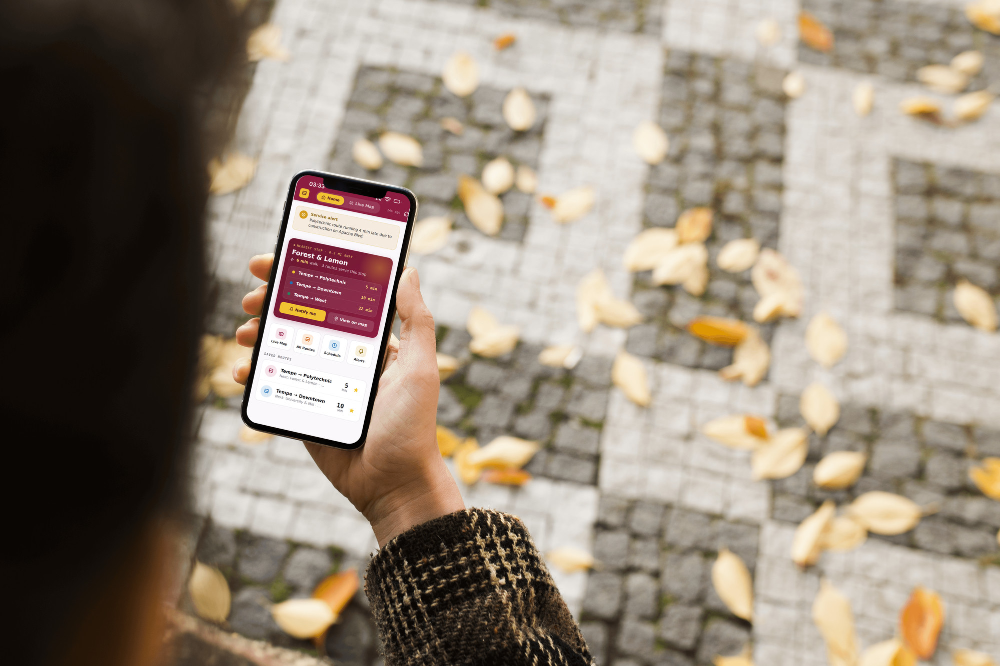

ASU Shuttle Tracking Website Redesign
Project Summary
A UX research and product redesign case study for ASU's intercampus shuttle tracker, focused on live arrival clarity, mobile map interactions, and commuter confidence.
Role: Solo UX/UI Designer and Researcher · Year: 2025

Overview
ASU's intercampus shuttles move thousands of students between four campuses every day. For cross-campus commuters, even small delays or unclear information can mean missed classes, late arrivals, and unnecessary stress.
This redesign focused on solving user pain points in time-sensitive moments, optimizing map interactions on mobile, and surfacing real-time arrival information clearly.
- Real-time shuttle arrival information is promoted instead of buried.
- Map interactions are redesigned around mobile commuter behavior.
- The experience supports quick decisions before riders leave for a stop.
Research
I used heuristic markup, user interviews, and a usability survey to understand where the existing shuttle experience broke down. Riders described unreliable live tracking, hard-to-find nearby stops, and friction from repeatedly loading a website during routine commutes.
The strongest pattern was not simply that users wanted a map. They wanted guidance: where the bus is, where they are, which stop is closest, and when they should leave.
Definition
Interview findings became two commuter personas: Sammy, a Polytechnic undergraduate who lives in Tempe and commutes twice a week, and Foster, a Tempe graduate student who is new to other campuses.
Mapping the journey showed a clear emotional dip during the moment when riders decide when to leave. Arrival times were technically present, but not visible or trustworthy enough to support action.
Design Approach
The redesign separated rider intent into clearer areas: routes, live map context, nearby stops, and arrival details. This made the interface less dependent on users interpreting icons or panning around a dense map.
Instead of treating tracking as the whole product, the new structure treats tracking as one part of guidance.
Validation
To validate the redesign, I combined qualitative and quantitative testing. The five-second test captured first impressions, usability tasks evaluated real interaction paths, and SUS plus time-on-task provided performance benchmarks.
Participants completed core tasks quickly and rated the redesigned experience with an average SUS score of 83.75, above the common benchmark of 68.
Takeaways
Route and map tabs gave each user type a clearer space instead of forcing one view to serve every commuter. Real-time information needed to lead the interface, not sit underneath icons and hidden panels.
The project also showed that minimalism has a clarity cost. Clean icons looked polished, but labels and visible hierarchy helped users move with more confidence.